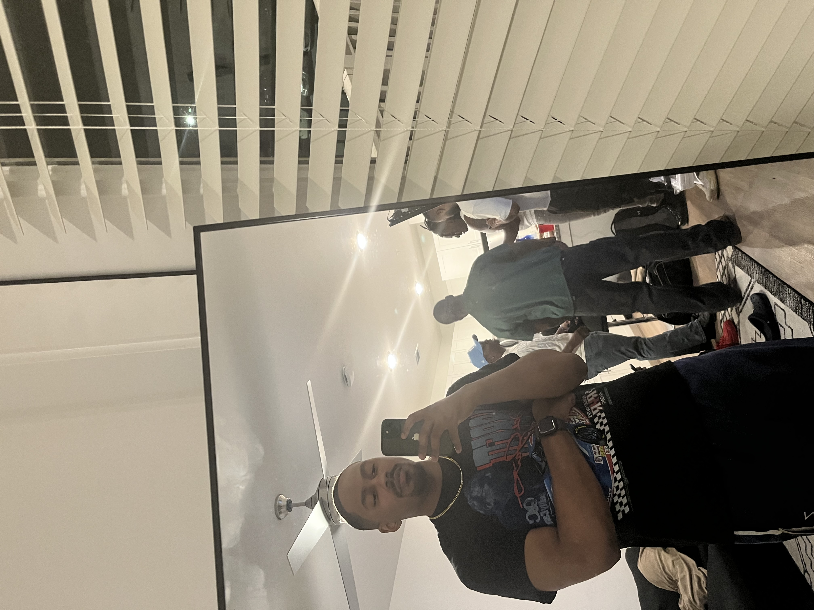

I acknowledge that this information is public - D.J. 08/26/2025

Hey, my name is David.I am in my second-to-last semester at CPCC, working towards an
IT - App. Dev &
Data Analysis degree. I love collecting vinyl records and playing video games with my friends. Programming
has always been a passion of mine since I was a kid, and I hope to be able to do it for the rest of my life. To
me, programming is a art form just like painting or poetry; the best programmers can create unique solutions
to problems, either using existing tools or creating new ones from scratch
Personal Background: I am 23 years old, and I was born and raised in Charlotte
Professional Background: Until, recently, I worked either full or part time at different
Chipotles
Academic Background: I started my college career at East Carolina University in their
computer science
program before coming back to Charlotte and enrolling in CPCC.
Primary Computer HP Desktop running Windows and Arch Linux via Virtual Machine. I primarily
work at my desk,
but I also have a MacBook Air in case I want to work on the go.
Courses I'm Taking, & Why:
WEB115 - Web Markup and Scripting: Required for my degree, I think it's fun to code
websites
CSC221 - Advanced Python Programming: Required for my degree, I want to further my
acknowledge in Python
CSC151 - Java Programming: Required for my degree, I have to retake this class from the
summer session
ENG111 - Writing and Inquiry: Required for my degree, I already took and passed it a
ECU, but it won't transfer
because it was Pass/Fail
"You don't have to bhe a man to fight for freedom. All you have to do is to be an intelligent human
being" - Malcolm X